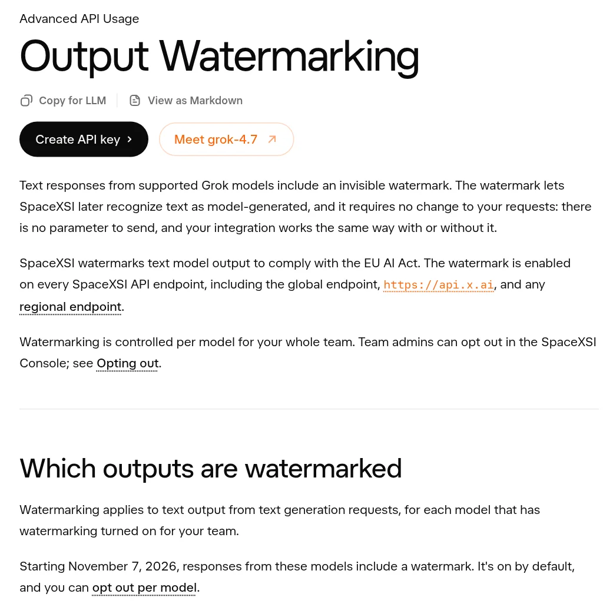
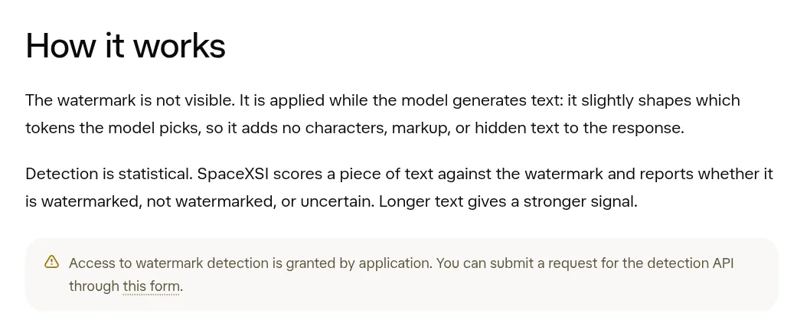
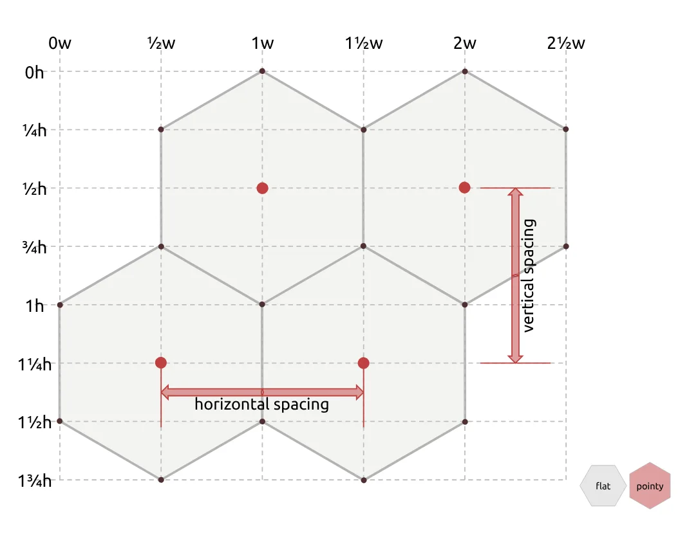
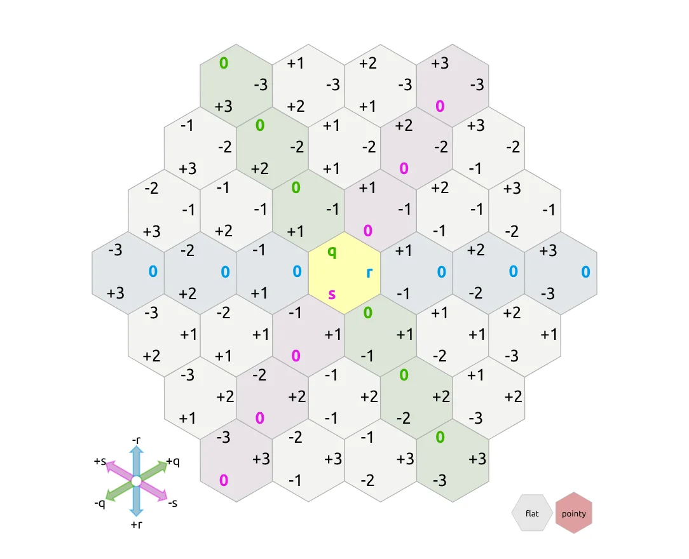
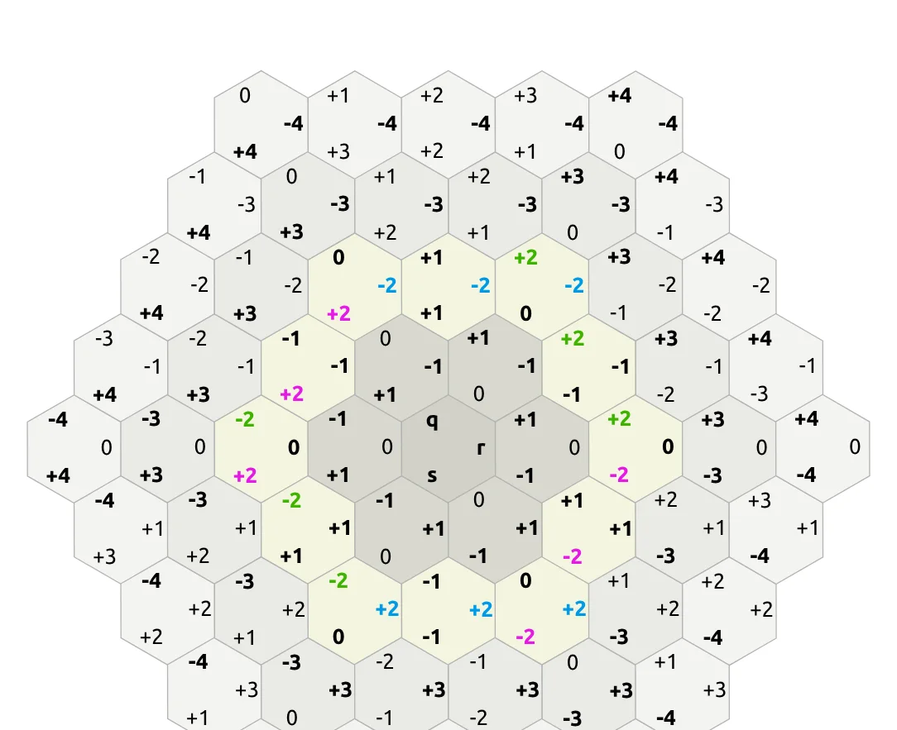
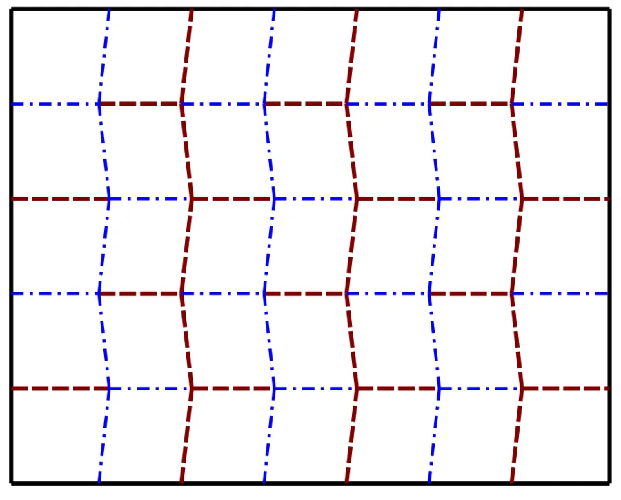
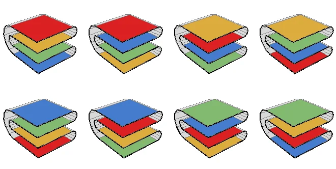

Invisible watermarks in AI text, the best guide to hexagons, and folding paper to the MoonAI 文字里的隐形水印、最好的六边形网格指南，以及把纸折到月球
Happy Monday, Tim! A fresh week, three fresh things to play with.
周一快乐，Tim！新的一周，送上三样新鲜好玩的东西。
From Nov 7, Grok API text will carry an invisible watermark by default从 11 月 7 日起，Grok API 生成的文字将默认带上隐形水印
xAI (its developer docs now say SpaceXSI) published a new Output Watermarking page on Oct 31. Starting November 7, text from grok-4.7, grok-4.6, grok-4.5, grok-4.3 and the three grok-4.20 models gets a hidden watermark by default, on every API endpoint. It covers normal replies, structured outputs and even tool-call arguments, and developers don't need to change any code.
The neat part is how it works. Nothing is added to the text: no hidden characters, no markup. Instead, while the model writes, the watermark "slightly shapes which tokens the model picks." Later, a detector scores a piece of text and says watermarked, not watermarked, or uncertain, and the docs note that longer text gives a stronger signal. Each API response also gets an x-watermark: true header so developers can log which outputs were marked. Team admins can opt out per model, but only after confirming a legal exception applies, and the stated reason for all this is the EU AI Act.
xAI（其开发者文档现在署名 SpaceXSI）在 10 月 31 日发布了新的“输出水印”文档。从 11 月 7 日起，grok-4.7、grok-4.6、grok-4.5、grok-4.3 以及三个 grok-4.20 模型生成的文字，会在所有 API 端点上默认带隐形水印。普通回复、结构化输出，甚至工具调用参数都包括在内，开发者不用改任何代码。
妙的是它的原理：文字里什么都没加，没有隐藏字符，也没有标记。水印是在模型写字的过程中，“轻微地影响模型选哪些词”。之后，检测器给一段文字打分，判断为有水印、无水印或不确定；文档还特别说明，文字越长，信号越强。每个 API 响应还会带上 x-watermark: true 的响应头，方便开发者记录哪些输出被打了水印。团队管理员可以按模型关闭，但必须先确认符合法律上的例外情形。xAI 给出的理由是遵守欧盟《人工智能法》。
Why it matters为什么重要
As AI text floods the web, "was this written by a model?" is getting hard to answer by eye. Statistical watermarks are one of the few ideas that actually scale, and regulation like the EU AI Act is now pushing big labs to switch them on by default. The catch: the signal lives in word choices, so short or heavily rewritten text is hard to judge.
AI 生成的文字越来越多，“这是不是模型写的？”已经很难靠肉眼判断。统计水印是少数真正能大规模用起来的办法，而欧盟《人工智能法》这样的法规正推动大厂默认开启它。不过要注意：信号藏在用词选择里，所以太短或被大幅改写的文字就很难判断。


Hexagonal Grids, by Amit Patel (Red Blob Games)《六边形网格》，作者 Amit Patel（Red Blob Games）
If you've ever played a strategy game on a honeycomb map, there's a good chance its developers learned the math here. Amit Patel started this guide in March 2013 and has kept polishing it ever since (last updated in 2026). Almost every diagram is alive: hover, drag and toggle to see how hexes are laid out, how to number them, and how to do distances, lines, rings, rotation and pathfinding.
The big "aha" is cube coordinates. Give each hex three numbers (q, r, s) that always add up to zero, and suddenly a hex grid behaves like a slice of a 3D cube grid. Distance becomes a one-liner, rotating by 60° is just shuffling the three numbers, and drawing a straight line is "step along and round to the nearest hex." It's the rare tutorial that's useful for game devs and pure joy for everyone else.
如果你玩过蜂窝地图的策略游戏，它的开发者很可能就是在这里学的数学。Amit Patel 从 2013 年 3 月开始写这篇指南，此后一直在打磨（最近一次更新是 2026 年）。几乎每张图都是“活”的：鼠标悬停、拖动、切换，就能看到六边形怎么排布、怎么编号，以及距离、直线、环、旋转、寻路怎么算。
最大的“原来如此”是立方坐标：给每个六边形三个数 (q, r, s)，并且三者之和永远为 0，六边形网格就突然变成了三维立方体网格的一个切片。算距离只要一行，旋转 60° 只是把三个数挪个位置，画直线就是“一步步插值再取整到最近的六边形”。这是少见的既对游戏开发者实用、又让普通读者看得很过瘾的教程。



Fold a sheet of paper 42 times and it would reach the Moon把一张纸对折 42 次，厚度就能够到月球
Take an ordinary 0.1 mm sheet and fold it in half: 0.2 mm. Again: 0.4 mm. Each fold doubles the thickness, so after n folds it's 0.1 mm × 2ⁿ. That starts boring and then gets wild. 23 folds is about 839 m, taller than the Burj Khalifa. 30 folds is about 107 km, past the edge of space. 42 folds is about 440,000 km, more than the Moon's average distance of 384,400 km. 51 would pass the Sun.
So why can't you do it? Because folding eats paper. In 2001, California high-schooler Britney Gallivan worked out how much length you need to fold in one direction: L = πt/6 × (2ⁿ + 4)(2ⁿ − 1). That grows roughly 4× per fold. In January 2002 she proved her math by folding a roughly 4,000-foot (1.2 km) strip of toilet paper 12 times, breaking the old "you can't fold paper more than 8 times" myth. Plug in 42 folds and her formula wants a strip about 107,000 light-years long, roughly the width of the Milky Way.
拿一张普通的 0.1 毫米厚的纸对折一次：0.2 毫米；再折：0.4 毫米。每折一次厚度翻倍，所以折 n 次就是 0.1 毫米 × 2ⁿ。一开始很无聊，后面就离谱了：23 次约 839 米，比哈利法塔还高；30 次约 107 公里，冲出太空边界；42 次约 44 万公里，超过地月平均距离 38.44 万公里；51 次就能越过太阳。
那为什么做不到？因为对折会“吃纸”。2001 年，加州高中生 Britney Gallivan 推导出单方向对折所需的纸长：L = πt/6 × (2ⁿ + 4)(2ⁿ − 1)，大约每多折一次就要 4 倍长的纸。2002 年 1 月，她用一条约 4000 英尺（约 1.2 公里）长的卫生纸成功对折 12 次，打破了“纸最多只能折 8 次”的老说法。把 42 次代入她的公式，需要一条约 10.7 万光年长的纸条，差不多是银河系的直径。

